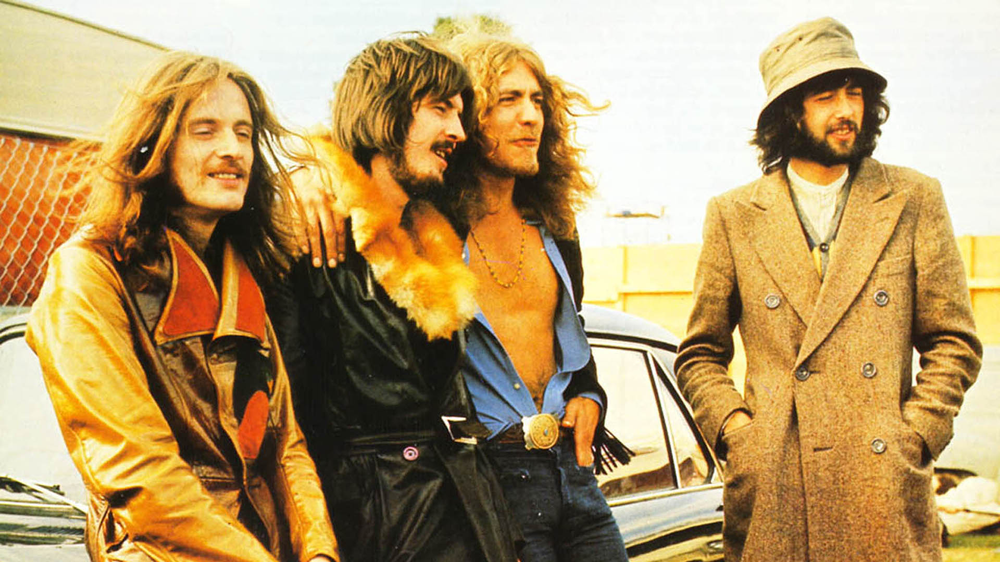

Los shows de Led Zeppelin fueron una parte central de su identidad y una de las razones principales de su enorme impacto en la historia del rock. A diferencia de muchas bandas de su época, no solo reproducían sus canciones en vivo, sino que las transformaban completamente, extendiéndolas con improvisaciones largas y momentos únicos en cada presentación.
Desde sus primeras giras a fines de los años 60, el grupo se destacó por una energía intensa y un volumen inusualmente alto para la época. Jimmy Page solía experimentar con efectos de guitarra, incluso utilizando un arco de violín para crear sonidos atmosféricos, mientras que John Bonham ofrecía solos de batería extensos, como el famoso “Moby Dick”, que podían durar más de 20 minutos. Por su parte, Robert Plant aportaba una presencia escénica muy carismática, y John Paul Jones sumaba versatilidad con múltiples instrumentos.
Durante los años 70, Led Zeppelin se convirtió en una de las bandas más convocantes del mundo. Realizaron giras masivas en Estados Unidos y Europa, tocando en estadios y arenas con cifras récord de asistencia. Un ejemplo emblemático fue su presentación en Madison Square Garden en 1973, registrada en la película-concierto The Song Remains the Same.
Sus shows también eran conocidos por su duración: muchas veces superaban las tres horas, con sets que incluían versiones extendidas de temas como Dazed and Confused o Whole Lotta Love, donde improvisaban sobre blues y rock psicodélico.
En cuanto a lo técnico, fueron pioneros en el uso de grandes sistemas de sonido y producción escénica, ayudando a definir el formato de conciertos de rock a gran escala. Sin embargo, también hubo aspectos controvertidos: algunos shows fueron criticados por excesos, problemas de organización o comportamientos fuera del escenario.
Tras la muerte de John Bonham en 1980, la banda dejó de realizar giras, aunque hubo reuniones puntuales en años posteriores. Entre ellas destaca su presentación en el Live Aid y, especialmente, el concierto de 2007 en The O2 Arena, considerado uno de los regresos más importantes en la historia del rock.
En síntesis, los shows de Led Zeppelin no eran solo conciertos: eran experiencias intensas, impredecibles y muchas veces irrepetibles, que ayudaron a construir su leyenda.
